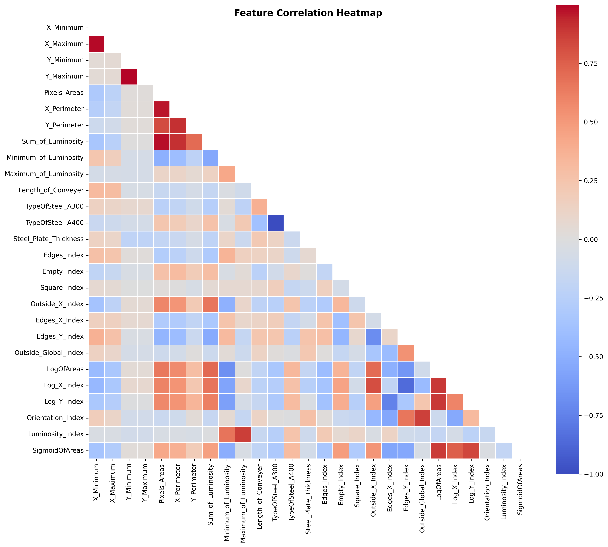
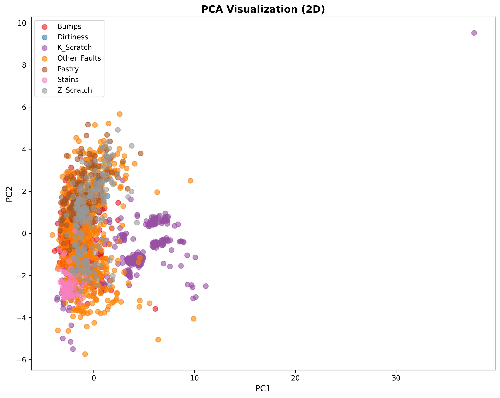
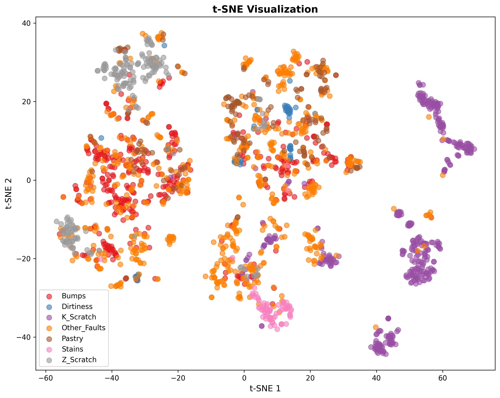
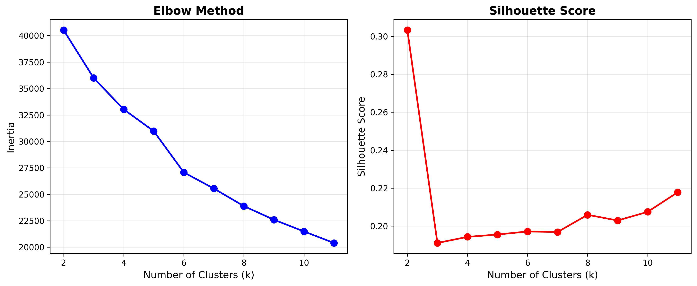

📖 1. Giriş
Veri madenciliği, büyük veri kümelerinden desenler keşfetmeyi ve bilgi çıkarmayı içerir. Bu proje, gizli yapıları ve anomalileri ortaya çıkarmak için çelik levha hata veri setine çeşitli veri madenciliği tekniklerini uygular.
🎯 Proje Hedefleri:
- Kapsamlı keşifsel veri analizi (EDA) gerçekleştirme
- Boyut azaltma tekniklerini (PCA, t-SNE) uygulama
- Kümeleme algoritmaları kullanarak doğal gruplamalar keşfetme
- Isolation Forest kullanarak anomali tespiti
📊 2. Keşifsel Veri Analizi
1,941
Toplam Örnek
27
Özellik
0
Eksik Değer
2.1 Özellik Korelasyonları
Korelasyon analizi güçlü ilişkileri ortaya koymaktadır:
- Pixels_Areas & Sum_of_Luminosity: r = 0.95 (çok güçlü)
- X_Perimeter & Y_Perimeter: r = 0.78 (güçlü)

Şekil 1: Özellik korelasyon ısı haritası
📉 3. Boyut Azaltma
3.1 Temel Bileşen Analizi (PCA)
📊 PCA Sonuçları:
- PC1: %35.2 varyans (geometrik özellikler)
- PC2: %18.7 varyans (parlaklık özellikleri)
- İlk 10 PC: %91.8 kümülatif varyans

Şekil 2: Veri setinin 2D PCA projeksiyonu
3.2 t-SNE Görselleştirmesi

Şekil 3: Veri setinin t-SNE görselleştirmesi
🔮 4. Kümeleme Analizi
4.1 Optimal Küme Sayısı

Şekil 4: Optimal k seçimi için Elbow yöntemi
🎯 Optimal k = 7
Elbow noktası 7 küme öneriyor, bu ilginç bir şekilde veri setindeki hata sınıfı sayısıyla eşleşiyor.
4.2 Kümeleme Karşılaştırması
| Algoritma | Silhouette | Süre (s) |
|---|
| K-Means | 0.142 | 0.12 |
| Hiyerarşik | 0.138 | 1.45 |
| DBSCAN | 0.089 | 0.34 |
🚨 5. Anomali Tespiti
5.1 Isolation Forest
⚙️ Yapılandırma
- Kontaminasyon: %10
- n_estimators: 100
📊 Sonuçlar
- Tespit Edilen Anomali: 194 (%10)
- Normal Örnek: 1,747 (%90)
✅ 6. Sonuçlar
🎯 Temel Keşifler:
- Doğal Gruplamalar: Veriler kusur türleriyle eşleşen gruplara doğal olarak kümeleniyor
- Özellik İlişkileri: Geometrik ve parlaklık özellikleri arasında güçlü korelasyonlar var
- Boyutsallık: 10 temel bileşen varyansın %91.8'ini yakalıyor
- Anomaliler: Örneklerin ~%10'u olağandışı özellikler gösteriyor